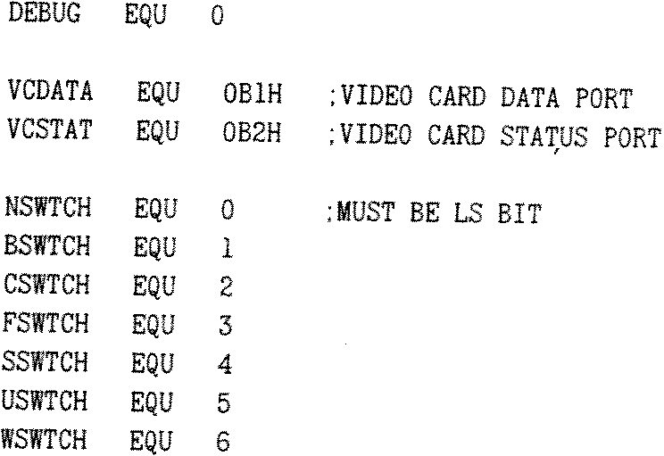

80-Bus News |
Spring 1985 · Volume 4 · Issue 1 |
| Page 21 of 31 |
|---|
| anywhere in the line. This switch will be overridden by a C switch setting. | |
| Ldd | indicates that the displayed line to be checked is the dd’th previous to the CHECK command line. An error is reported if this line is up off the screen. The B switch affects the line counting. The default value is one ie. the previous line on display. |
| N | indicates that the presence of the supplied string prompts for abortion of the submission. The default condition is that a matching string according to the other switches indicates that the submit file should continue. |
| S | indicates that the string must match the start of the displayed line. The default is a match anywhere in the line. This switch will be overridden by an F switch setting. |
| U | indicates that the displayed line should be converted to upper case before comparison with the supplied string. This is normally necessary as the CCP capitalises the command when it is put into the command area. No capitalisation is an option under CCPZ — the public domain rewrite of CCP for the Z80. The default option is no case conversion. |
| W | indicates that a ‘?’ in the supplied string is wild ie. as with the CP/M ambiguous file name convention ‘?’ will match any character in the displayed line. The default is that ‘?’ treated as a normal character. |
I hope that readers of the 80-BUS News find this short article interesting and the supplied program useful.
Nascom 2 with CP/M and Nas-Dos, MAP 80 RAM card (full 256K), Nascom AVC with CP/M and Nas-Dos software, Nascom FDC, one SSDD disk drive in twin drive box and PSU, Gemini 5A PSU and 8 slot backplane in rack frame. Gemini EPROM board with all the usual firmware, Bits and PC’s EPROM programmer — lots of spare 2708’s and 2716’s, PAL encoder card (needs attention). Nascom 1 with 32K RAM A card and BASIC ROM, Cottis-Blandford interface, 3A PSU (needs attention}. Lots of disk and tape software and all the manuals. Offers for whole or parts to: Dr David Plews, Tel. Steeton ____ _____ (day), ____ _____ (evening).
Title Check Submit
.Z80
.COMMENT !
CHECK 'string'/switches
This utility is run as part of a submit file. It a checks a previous line on display against the supplied string. If this string matches the displayed line according to the switches the submit continues, otherwise it can be aborted after a prompt.
The optional switches are:
| B | causes blank lines to be counted with the L switch, defaults to ignore blank lines. |
| C | the string matches the full displayed line, defaults to only part. |
| F | the string matches finish of displayed line, defaults to anywhere. |
| Ldd | causes the dd’th previous line to be compared with the string, defaults to one. |
| N | the string must not be in the displayed line, defaults to contained. |
| S | the string matches start of displayed line, defaults to anywhere. |
| U | the displayed line is converted to uppercase before comparison, defaults to no case change. |
| W | indicates that '?' in the supplied string are wild cards, defaults to ordinary '?' for matching. |
Switch C overrides F which overrides S.
It is intended to trap compiler error summaries etc and stop the continuation of the submit file. An example submit file is:
ED $1.MAC M80 =$1 CHECK 'NO FATAL ERROR(S)'/CU L80 /P:100,$1,$1/N/E $1
SC Willmott 26 April 1985
| Page 21 of 31 |
|---|